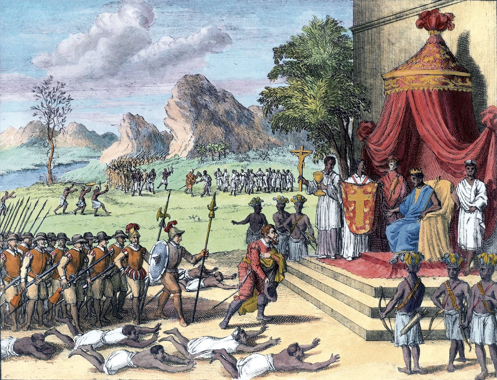
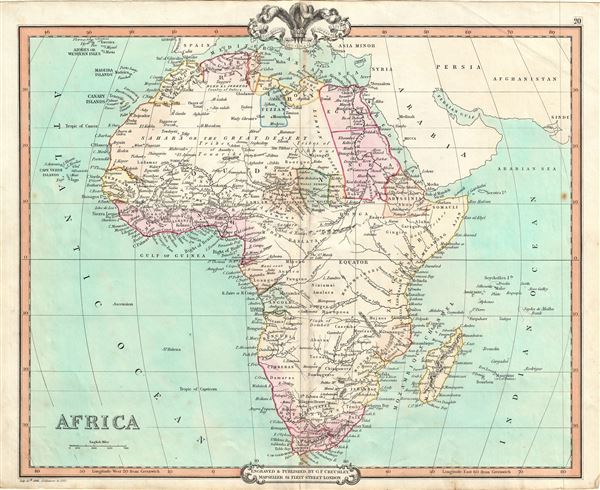
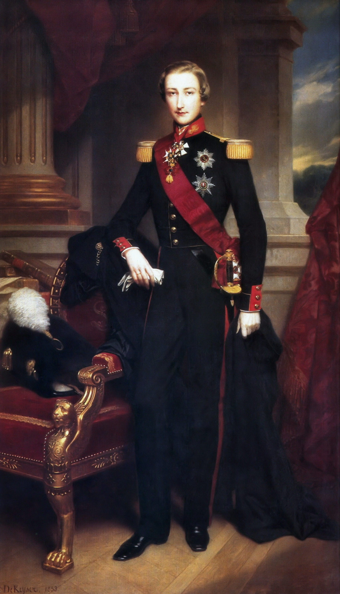

1390-1857
The Kingdom of Kongo operated as an independent state with territories shared with the Mongo people as well as other local kingdoms to control the footprint of the Democratic Republic of Congo.
1857
Though the first Portuguese explorers made it to the Kingdom of Kongo as early as the fifteenth century, a substantial force from the Portuguese arrive and transform what they called the “Reino de Congo” into a vassal state.
1870s
Dawn of the “Conquest of Africa,” a push among European powers to consume control of the various territories of the African continent. Of particular desire was staking a claim in the trade of ivory, which at the time was one of the continent’s most coveted commodities.
1874

Following his successful discovery of Dr. David Livingstone during his first expedition to Africa in 1869 (during which his oft-quoted phrase “Dr. Livingstone, I presume?” was quipped), Welsh explorer Henry Morton Stanley returns to Africa at the behest of the New York Herald to map the terrain of central Africa, including Congolese territory.
1876
Leopold II of Belgium learns of Stanley’s accomplishments and recruits him to undertake a rather secretive mission kept under wraps a sham organization known as the International African Society. Through a series of lies and diversions, Leopold and Stanley began to work together to develop spaces for international trade within the Congo with the hope of taking over control of the entire area.
1884

First Chancellor of Germany Otto von Bismarck organizes Berlin Conference, which formalized many European nation’s efforts to colonize Africa. Image: The Berlin Conference as illustrated in “Die Gartenlaube” (1884)
1885

Leopold takes over control of the region following the Berlin Conference; he renames the massive territory spanning close to a million square miles the Congo Free State. He also establishes the Force Publique, a military force made of local forces designed to keep the citizenry of the new state in line.
1887

Scottish veterinarian and inventor John Boyd Dunlop produced a prototype set of pneumatic, or inflatable, rubber tires. His invention would revolutionize the tire industry and would in turn push an exponential growth in demand for rubber. One of the most prolific sources for rubber was the Landolphia owariensis plant, also known as the Congo rubber plant, as it was plentiful in the Congolese region.
1890s
Leopold sets demands for the villages of Congo Free State to deliver scraped rubber harvests to his forces managed by Stanley. Pay is pitiful, but failure to deliver could prove deadly: in addition to the looming specter of the chicotte, torture and murder of innocent Congolese people was far too common. One of the most frequent penalties, for example, of not delivering one’s demanded quota of rubber was the severing of a hand.
1899

Famed Polish-British author Joseph Conrad publishes Heart of Darkness, based on his own travels through Africa and his documentation of these atrocious conditions. His writing drew attention to the dire conditions in the Congo Free States and thus precipitated an investigation.
1903

The British House of Commons commissions Roger Casement to travel to Africa to account for the conditions in the Congo Free State; his affirmation of the widespread corruption and genocide.
1908
The British government removes Leopold II from control in the Congolese region and renamed the territory the Belgian Congo. Leopold II was never punished for his dastardly administration.